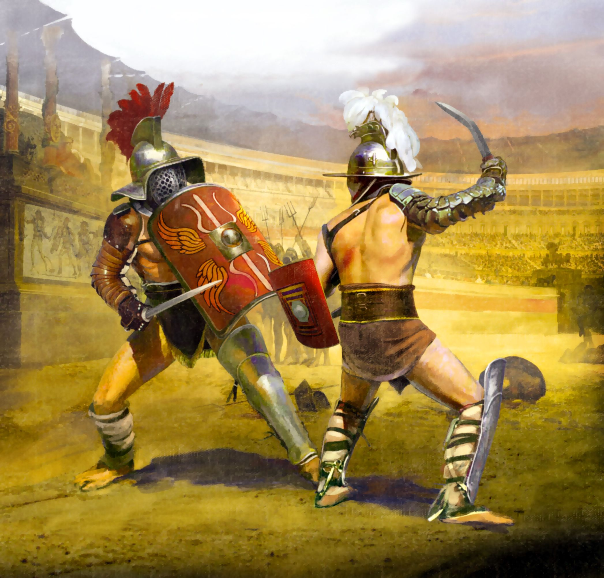
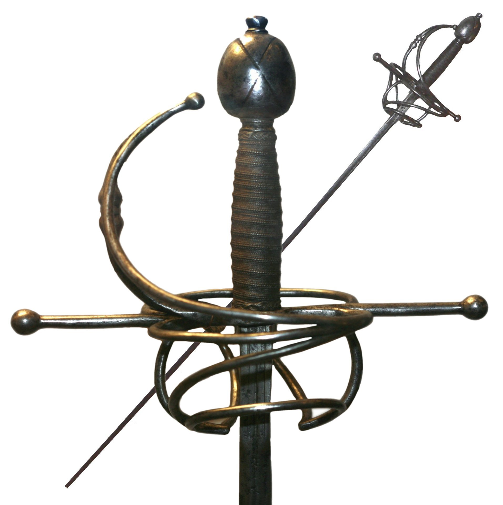
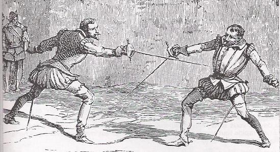
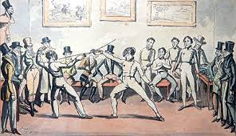

History of Combat Sports

The origins of combat sports go back to pre-historic times, as soon as humanity learned how to use weapons such as clubs, spears and knives. In the Bronze Age, fighting with a sword and shield became popular. The first historical evidence for a fencing
contest was a drawing on a wall of a temple in Egypt, built around 1190 B.C
Homer's Illiad, written in Ancient Greece, includes some of the first depictions of what we would call a duel
. Evidently, fighting was done, not just for survival but as a sport since ancient times. A popular example of this is Roman gladiators, who regularly engaged in combat for a sports setting.
Development of Fencing

The Rapier was introduced to England around the time of King Henry the VIIth. Starting from the 16th century, the Rapier, or espada ropera became a popular among the civilians, especially the wealthier classes of Europe.
The Rapier was used primarily as a thrusting weapon that had a long reach and allowed for fast reactions. This made it especially popular as a duelling weapon. Men would carry swords and learn the art of fighting to be seen as gentlemen
.
By the middle of the 16th century, many European cities contained great number of swordsmanship schools and the sport of fencing was codified. Italian fencing schools were particularly popular at this stage and their schools were set up in many foreign cities. The Italians used scientific principles to teach swordsmanship, which appealed to the sensibilities of the upper class, especially coming into the Renaissance period.
The French School

The French School had a disticntly academic approach to fencing. The Foil was invented in France as a training weapon in the middle 18th century to practice thrust fencing. Fencers blunted the point by wrapping a foil around the blade to practice. This was then popularised in Germany as the only weapon for academic thrust fencing. Training for duels was fashionable in the 19th century, especially for aristocratic males. Fencing with sharp weapons for duels was about defending an individuals honor
However, this style of fencing as preparation for duels went into sharp decline after World War I. Training for aristocratic males all but dissapeared and academic fencing as a discipline for training for duels died out. Fencing did continue as a sport with tournaments and championships, but this marked a distinct shift in how the sport was viewed.
Fencing as a Sport

The shift towards fencing as a sport rather than military training happened from the mid-18th century. The move was led by Dominico Angelo, one of the fencing instructors at the time, and fencing instructor to the Royal Family. In his book L'École des armes (The School of Fencing) he established the esssential rules of posture and footwork that are still in use today. He emphasised the health and sporting benefits of fencing rather than its use as a killing art. As fencing progressed, its combat aspect slowly faded and it became primarily done for sport
The first standardised fencing competition was held at the Grand Military Tournament and Assault at Arms in 1880. It featured a series of competitions between army officers and soldiers, with the first to 5 hits to win. At this time, regulatory organisations were being set up all over the world to codify the rules of the sport. In the US, the Amateur Fencers League of America was set up. In Britain, the Amateur Gymnastic & Fencing Association drew up an official set of fencing regulations in 1896.
Fencing was included in the first Olympic Games in the summer of 1896. Since then, it has been included in every Olympic Games up till today. However, it was deemed unsuitable or innapropriate for women. Women's foil was first introduced in 1924 Olympics in Paris, and Women's Épée and Sabre were not introduced till late in the 20th century.